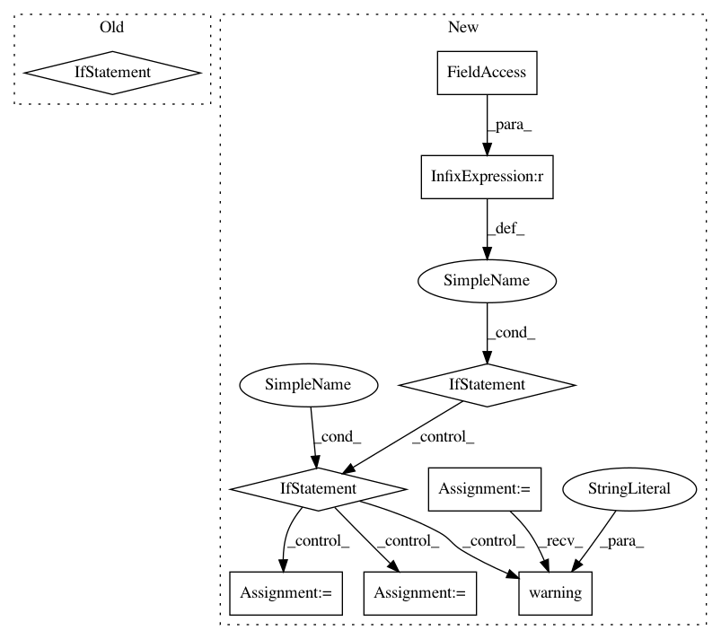

720a52ac619706148b7dafb7f9ff081964a73edb,msaf/featextract.py,Features,features,#Features#,135
Before Change
self._beatsync_features = self.compute_beat_sync_features(pad)
// Choose features based on type (beatsync or framesync)
self._features = self._beatsync_features \
if self.beat_sync else self._framesync_features
return self._features
def compute_features(self):
After Change
import pdb; pdb.set_trace() // XXX BREAKPOINT
// Choose features based on type
if self.feat_type is FeatureTypes.framesync:
self._features = self._framesync_features
elif self.feat_type is FeatureTypes.est_beatsync:
self._features = self._est_beatsync_features
elif self.feat_type is FeatureTypes.ann_beatsync:
if self._ann_beatsync_features is None:
// TODO: Improve error checking
logging.warning("NO ANNOTATED BEATS!")
self._features = self._est_beatsync_features
else:
self._features = self._ann_beatsync_features
// TODO: What if feat_type is wrong?
return self._features
def compute_features(self):
raise NotImplementedError("This method must contain the actual "
In pattern: SUPERPATTERN
Frequency: 3
Non-data size: 9
Instances
Project Name: urinieto/msaf
Commit Name: 720a52ac619706148b7dafb7f9ff081964a73edb
Time: 2016-06-03
Author: oriol.nieto@gmail.com
File Name: msaf/featextract.py
Class Name: Features
Method Name: features
Project Name: arviz-devs/arviz
Commit Name: caa856e7ac953638c682fbc7620d534e084b906f
Time: 2019-06-20
Author: oriol.abril.pla@gmail.com
File Name: arviz/data/io_pymc3.py
Class Name: PyMC3Converter
Method Name: posterior_predictive_to_xarray
Project Name: RaRe-Technologies/gensim
Commit Name: 790b9a7f29f19bad21fd3c5c5f91a153ac96f69d
Time: 2019-05-05
Author: m@penkov.dev
File Name: gensim/models/_fasttext_bin.py
Class Name:
Method Name: _load_matrix